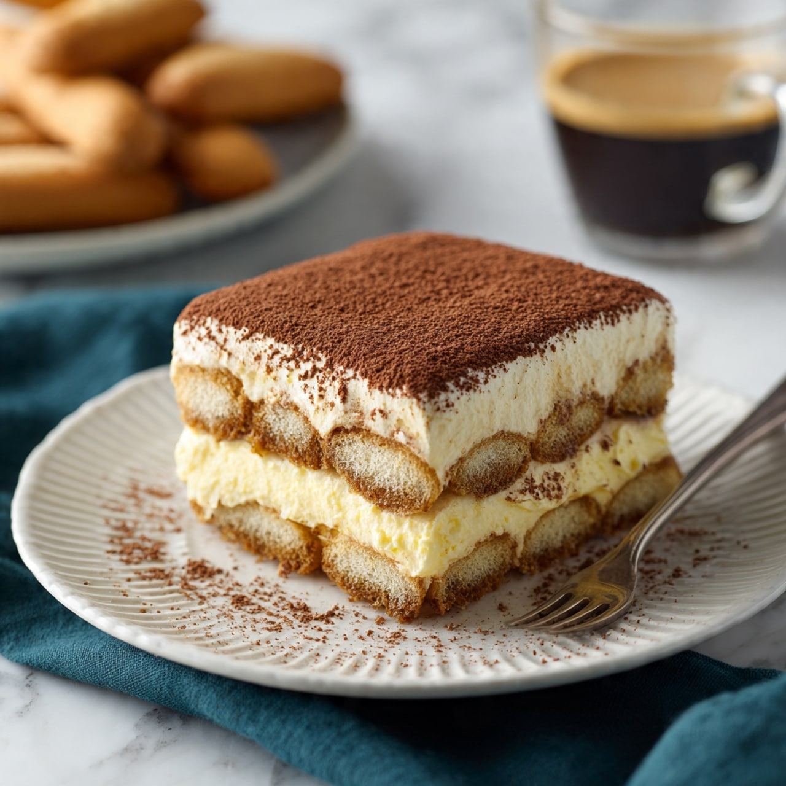

Tiramisu is a beloved Italian dessert known for delicate layers and irresisitible combination of flavours. Made with coffee-soaked ladyfinger biscuits, a smooth and creamy mascarpone mixture, and a generous dusting of cocoa powder, this dessert offers the perfect balance of sweetness and rich coffee flavour.
The name Tiramisu translates to "pick me up" in Italian, a fitting description for this delightful dessert with its rich coffee flavour and creamy texture. It is traditonally prepared ahead of time and chilled, allowing the layers to blend beautifully and develop their signature taste.
Ingredient
Ingredient
Ingredient
Step 1
Step 2
Step 3